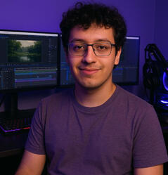

Vídeos que fazem o dedo parar.
Eu sou o Yuri. Transformo ideias e gravações em vídeos com ritmo, personalidade e um motivo para ficar até o final.
Ritmo.
Impacto.
Feito para ser visto.
Cada corte tem uma função. Escolha uma frente e explore os trabalhos que já estão no ar.
Deslize para o lado e escolha um vídeo →
Categoria Reels selecionada
O ritmo não acontece.
Ele é construído.
Meu processo combina clareza de mensagem com escolhas de montagem. Toque em cada etapa para entender o que ela faz na história.
Um roteiro visual — cada projeto tem seu próprio compasso.

YURI PATRICK / EDIÇÃOPrazer,
Yuri Patrick.
Editor de vídeo focado em retenção e engajamento, com cinco anos de experiência em edição e animação. Do primeiro gancho aos detalhes de motion, gosto de encontrar o jeito certo de cada conteúdo falar com quem está assistindo.
Tem uma ideia?
Bora editar.
Me conta o que você está criando. A gente conversa sobre o formato e o ritmo que fazem sentido para o seu projeto.